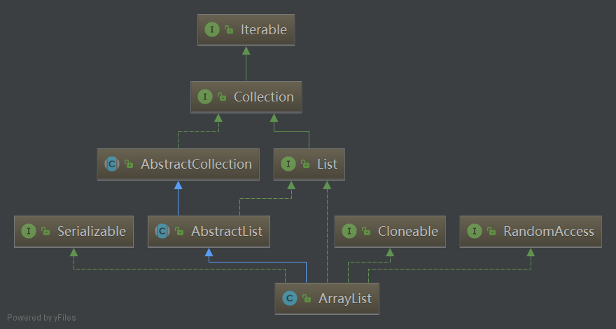

Resizable-array implementation of the List interface. Implements all optional list operations, and permits all elements, including null. In addition to implementing the List interface, this class provides methods to manipulate the size of the array that is used internally to store the list. (This class is roughly equivalent to Vector, except that it is unsynchronized.)
这篇 note 介绍一下 Java 集合框架中的 ArrayList，并从源码的角度分析其扩容机制、迭代方法和序列化等内容。
ArrayList 简介
想要深入学习某个 class，还是要看其源码。我这里使用 IntelliJ IDEA 这一款出色的 IDE 来研究 ArrayList。
ArrayList 是一个动态数组，它继承自 AbstractList 这个抽象类，并实现了 List、RandomAccess、Cloneable 以及 Serializable 接口。
1 | public class ArrayList<E> extends AbstractList<E> |
为了避免对链表的随机访问操作，Java SE 1.4 引入了一个标记接口 RandomAccess。这个接口不包含任何方法，不过可以用它来测试一个特定的集合是否支持高效的随机访问。显然，ArrayList 支持。
1 | if (list instanceof RandomAccess) { |
ArrayList 的继承关系如下图所示。

其中绿色虚线为实现接口，绿色实现代表继承接口，蓝色实线表示类的继承。
API
扩容机制
我们知道，ArrayList 是一个动态数组，它在底层使用 Object 类型的定长数组存储数据，默认初始容量为10。
1 | // 数组 |
要实现动态长度必须进行容量的扩展。这里以 add 方法为例：
1 | public boolean add(E e) { |
add 方法调用 ensureCapacityInternal 进行动态扩容，add 每次加一，因此传递的参数是 size + 1。
1 | private void ensureCapacityInternal(int minCapacity) { |
ensureCapacityInternal 方法首先判断数组是否为空（即通过无参构造函数创建的，而不是 size == 0），若为空，参数 minCapacity 取默认初始容量和它本身的较大值，然后调用 ensureExplicitCapacity：
1 | private void ensureExplicitCapacity(int minCapacity) { |
最终，grow 方法实现了扩容。正常情况下，new 一个 1.5 倍长度的新数组，使用 System.arraycopy 方法将原数组中的每一个元素拷贝到新数组。
有些虚拟机在数组中保存 header words，因此 MAX_ARRAY_SIZE 比 MAX_VALUE 略小，可参考这里。
每次扩容都是一次数组的拷贝，如果数据量很大，这样的拷贝会非常耗费资源。推荐在集合初始化时指定初始容量。
1 | private static final int MAX_ARRAY_SIZE = Integer.MAX_VALUE - 8; |
另外，可以显示调用ensureCapacity方法扩容，前提是 list 声明为 ArrayList。
1 | public void ensureCapacity(int minCapacity) { |
overflow-conscious code
源码中出现了令人不解的注释 overflow-conscious code，这到底是什么意思呢？我举两个例子：
- oldCapacity 大于 MAX_ARRAY_SIZE 的三分之二，newCapacity 溢出，但仍然会调用 hugeCapacity 方法使新的容量增大到最大值。
1 | // add |
- 两个容量很大的 list，通过 addAll 方法合并，会抛出 OutOfMemoryError。
1 | // addAll, the same size of 1500000000 |
比较大小时使用 a - b > 0 这种方式，而不是传统的 a > b，这或许就是 overflow-conscious code 的巧妙之处吧。
add 和 remove 方法
ArrayList 支持随机访问，get方法很快，但在 add(index) 和 remove 的时候要挪动 index 后面的元素，效率很低。因此，频繁插入和删除时应使用 LinkedList。
1 | public void add(int index, E element) { |
与数组的转换
使用集合转数组的方法，必须使用集合的 toArray(T[] a)，传入的是类型完全一致的数组，大小就是 list.size()，向下面这样：
1 | List<String> list = new ArrayList<>(3); |
使用 toArray(T[] a)，入参分配的数组空间不够大时，方法内部将重新分配内存空间，并返回新数组地址；如果数组元素大于实际所需，下标为 [list.size()] 的数组元素将被置为 null，其它数组元素保持原值，因此最好将方法入参数组大小定义与集合元素个数一致。源码如下：
1 | public <T> T[] toArray(T[] a) { |
当使用 Arrays 类中的 asList() 把数组转成集合时，不能使用修改集合相关的方法，它的 add/remove/clear 方法会抛出 UnsupportedOperationException 异常。究其原因，asList 的返回对象是一个Arrays 的内部类，继承自 AbstractList，并没有实现集合的修改方法。
1 | // 不能用修改集合的方法 |
遍历
查看 ArrayList 的源码，其中很多 modCount，这个变量到底有什么用呢？其实，它是在 AbstractList 中定义的变量，用于记录 list 发生结构性修改的次数。
1 | // The number of times this list has been structurally modified |
ArrayList 中无论 add、remove、clear 方法只要是涉及了改变 ArrayList 元素的个数的方法都会导致 modCount 的改变，set 方法不被视为结构性修改。ArrayList 的迭代器是 fail-fast 的，参考 fail-fast机制。
不要在 foreach 循环里进行元素的 remove/add 操作。remove 请使用 Iterator 方式，如果并发操作，需要对 Iterator 对象加锁。
1 | Iterator<String> iterator = list.iterator(); |
但有趣的是，使用 foreach 循环删除倒数第二个元素时，不会报错，其他情况下会产生 ConcurrentModificationException。这是因为每次循环会调用迭代器的 hasNext 方法，删除倒数第二个元素再次判断时，hasNext 返回 false，直接退出循环。
1 | List<String> list = new ArrayList<>(); |
另外，ArrayList 中还有 ListIterator 的实现，提供了反向遍历的功能，具体参考 Interface ListIterator。
序列化
ArrayList 实现了 Serializable 接口，表明其可以被序列化，但是保存所有元素的 elementData 数组却是 transient 类型的，并且源码中还有两个诡异的 private 方法与序列化有关，一个 writeObject, 一个 readObject。什么鬼？
原来，这两个方法是通过 Java 的反射原理来定制序列化和反序列化策略的。有时数组中的元素很少但 elementData.length 很大，这样在序列化过程中会包含很多的 null 值，因此 writeObject 和 readObject 中都有一个 0~size 的 for 循环，以去掉多余的 null。更详细的介绍请参考深入分析Java的序列化与反序列化。
1 | private void writeObject(java.io.ObjectOutputStream s) |
SubList
ArrayList 的 subList 结果不可强转成 ArrayList，否则会抛出 ClassCastException 异常。subList 返回的是 ArrayList 的内部类 SubList，并不是 ArrayList ，而是 ArrayList 的一个视图，对于 SubList 子列表的所有操作最终会反映到原列表上。
在 subList 场景中，高度注意对原集合元素个数的修改，会导致子列表的遍历、增加、删除均会产生 ConcurrentModificationException 异常，因此在生成子列表后不要再操作原列表。
推荐阅读
Fail Fast Vs Fail Safe Iterator In Java : Java Developer Interview Questions
秦小波. 编写高质量代码:改善Java程序的151个建议[M]. 机械工业出版社, 2012.
Java核心技术 卷I：基础知识（原书第10版）